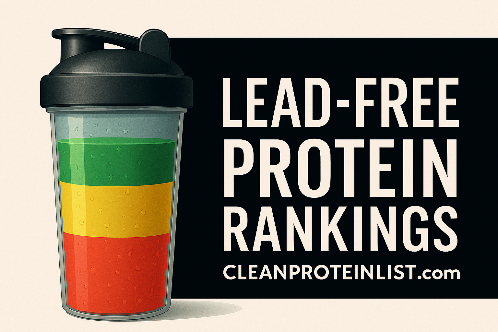

Lead-Free Protein Powder: 134+ Brands Ranked by Test Results (2026)
Which Protein Powders Are Actually Lead-Free?
Based on Consumer Reports (28 products, Oct 2025 + Jan 2026) and Clean Label Project (160+ products) independent testing, these are the verified lead-free or near-zero-lead options:
- MuscleTech 100% Mass Gainer — Lead not detected — the only product to achieve this (CR #1)
- Optimum Nutrition Gold Standard Whey — Below detection limits (CR #5 + Clean Label certified, $0.75/serving)
- Dymatize ISO-100 — Clean Label Project Purity Award (non-detectable); note: CR tested the Super Mass Gainer, not ISO-100 directly
- Body Fortress Super Advanced Whey — Non-detectable (Clean Label certified, $0.67/serving — cheapest verified-safe option)
- OWYN Pro Elite — Below detection limits (CR #7 — only verified-safe plant option, Oct 2025)
- + 16 more Clean Label Project certified brands — full list in the database below
Scroll down for the complete 134+ brand database, verification status for every brand, and safe alternatives for contaminated products.

⚠️ Critical Finding
Bottom line: Most protein powders are not lead-free. This database shows you which brands are verified safe for daily use. Includes January 2026 Consumer Reports Update.
🔎 Find Your Lead-Free Protein in 60 Seconds
Take our quiz to get personalized recommendations based on your current brand
Take Free Safety Quiz →Table of Contents
- Quick Answer: Which Brands Are Lead-Free?
- Testing Methodology & Standards
- The 21 Verified Safe Brands
- Gold Standard: Verified by Both Sources
- Consumer Reports Top 7
- Clean Label Project "Clean 16"
- Moderately Contaminated Brands (Limit Use)
- Dangerously Contaminated Brands (AVOID)
- Popular Brands NOT Tested
- The Plant Protein Problem
- Why Chocolate Flavors Are Dangerous
- The Organic Myth: Why Organic ≠ Safe
- How to Choose Lead-Free Protein Powder
- Brand Comparison Tables
- Price Analysis: Safe vs Contaminated
- What If You're Using Contaminated Protein?
- Frequently Asked Questions
- How We Keep This Database Updated
Quick Answer: Which Protein Brands Are Lead-Free?
✅ 21 Brands Are Verified Lead-Free or Below Safe Limits
Based on independent testing from Consumer Reports (October 2025 + January 2026) and Clean Label Project (2023-2024), only 21 protein powder products out of 134+ analyzed have been verified safe with heavy metals at non-detectable or below-safe-harbor levels.
The Safest Lead-Free Brands:
- MuscleTech 100% Mass Gainer - Lead: NOT DETECTED (only product to achieve this)
- Dymatize Super Mass Gainer - Consumer Reports #2 (25% of concern level, safe for 4/day). Note: this is the CR-tested product — ISO-100 is separately Clean Label certified
- Dymatize ISO-100 - Clean Label Project Purity Award (non-detectable heavy metals); not directly CR tested
- Optimum Nutrition Gold Standard - Verified by BOTH Consumer Reports (#5) AND Clean Label Project, best value ($0.75/serving)
- Body Fortress Super Advanced Whey - Clean Label certified, cheapest safe option ($0.67/serving)
- Momentous Whey Isolate - NSF Certified for Sport, CR #3
- BSN Syntha-6 - Best taste among safe options, CR #4
- OWYN Pro Elite - ONLY safe plant-based option verified by CR (October 2025 study)
- Truvani Plant Protein - January 2026 CR study — below limit, safe for daily use
- Ritual Essential Protein - January 2026 CR study — below limit, safe for daily use
- + 11 more Clean Label Project certified brands
🚫 Brands to AVOID (Dangerously Contaminated):
- Naked Nutrition Vegan Mass Gainer - 7.86 µg lead (1,572% over safe limit)
- Huel Black Edition - 6.44 µg lead (1,288% over safe limit)
- Garden of Life Sport Organic - 2.82 µg lead (564% over safe limit)
- Momentous Plant Protein - 2.38 µg lead (476% over safe limit)
Key insight: All 4 worst-ranked products were plant-based. Whey protein is inherently 10-15x safer than plant protein.
Visual Safety Scale
Testing Methodology & Standards
This database combines data from two independent testing organizations that used gold-standard analytical chemistry methods to measure heavy metal contamination in protein powders.
Testing Sources
🔬 Consumer Reports (October 2025 + January 2026)
- Products tested: 28 total (23 Oct 2025 + 5 Jan 2026)
- Method: ICP-MS (Inductively Coupled Plasma Mass Spectrometry)
- Metals tested: Lead, arsenic, cadmium, mercury
- Why trustworthy: Independent non-profit, purchased products retail, peer-reviewed results
- Safe brands found: 7 products (Oct 2025) + all 5 Jan 2026 additions passed
🔬 Clean Label Project (2023-2024)
- Products tested: 160 products from 70 brands (83% market share)
- Method: ICP-MS + LC-MS/MS
- Data points: 35,862 measurements across 258 chemicals
- Metals tested: Lead, arsenic, cadmium, mercury, plus BPA/BPS
- Why trustworthy: Non-profit, used independent analytical lab (Ellipse Analytics)
- Safe brands found: 16 products earned "Clean 16" certification
Safety Standards Referenced
California Proposition 65 Safe Harbor Limits (Used as Benchmark)
- Lead: 0.5 µg per day (most relevant for protein powder)
- Cadmium: 4.1 µg per day
- Arsenic (inorganic): 10 µg per day
- Mercury: 0.3 µg per day
Why Prop 65? It's the strictest heavy metal disclosure law in the US. Products exceeding these limits require warning labels in California.
What "Below Detection Limits" Means
Below detection limits: Lead levels are so low that laboratory equipment cannot measure them (estimated <0.1 µg per serving). This is approximately 5x safer than the Prop 65 threshold.
Not detected: Zero measurable lead found. MuscleTech Mass Gainer was the ONLY product to achieve this.
Key Findings Across Both Studies
47% Failed Safety Standards
Out of 183 total products tested across both studies, 47% exceeded at least one federal or state safety limit for heavy metals.
21% Were 2x Over Limits
21% of products contained lead levels more than DOUBLE California's safe harbor threshold.
Plant Proteins 5x Worse
Plant-based proteins contained 5x more cadmium and 10-15x more lead than whey-based proteins.
Chocolate = High Risk
65% of chocolate protein powders exceeded Prop 65 lead limits. Chocolate had 110x more cadmium than vanilla.
Organic = 3x More Lead
Certified organic products had 3x more lead than non-organic, primarily due to plant-based protein sources.
BPA Nearly Eliminated
Good news: BPA/BPS found in only 3 of 160 products (2%), down from 55% in 2018. Packaging contamination mostly solved.
⚡ Quick Check: Is YOUR Protein Safe?
Tell us what you're using - we'll show you the safety data in 5 seconds:
The 21 Verified Lead-Free or Safe Brands
Based on independent testing from Consumer Reports and Clean Label Project, 21 protein powder products have been verified safe with lead, cadmium, mercury, and arsenic at non-detectable or below-safe-harbor levels.
These brands are organized into three tiers based on verification:
- Gold Standard (2 brands): Verified by BOTH Consumer Reports AND Clean Label Project
- Consumer Reports Verified (5 brands): Tested only by Consumer Reports (October 2025)
- Clean Label Certified (14 brands): Tested only by Clean Label Project
Note: The January 2026 Consumer Reports additions (Clean Simple Eats, Equate, Premier Protein Powder, Truvani, Ritual) all passed but are not yet integrated into tier rankings. See the January 2026 update article for full details.
🏆 Gold Standard: Verified by BOTH Testing Sources
These products passed independent testing from both Consumer Reports and Clean Label Project. This dual verification provides the highest level of confidence in their safety.
1. Optimum Nutrition Gold Standard 100% Whey
Why It's the Best Value:
- Dual verification from two independent testing sources
- Cheapest dual-verified option at $0.75/serving
- World's best-selling protein powder - proven track record
- Widely available at Amazon, Costco, GNC, Vitamin Shoppe
- Excellent taste and mixability - 4.5/5 star ratings
- 24g protein per serving from whey isolate and concentrate blend
Best For:
Budget-conscious buyers who want verified safety without premium pricing. Ideal for daily post-workout use, general supplementation, or anyone new to protein powder.
Tested Flavors:
Clean Label tested: Vanilla Ice Cream
Note: All flavors use the same protein base, so safety is consistent across the product line. Choose based on taste preference.
Disclosure: This page contains affiliate links to products we have identified as cleaner or lower in heavy metal contamination. As an Amazon Associate, we may earn a commission if you purchase through these links, at no extra cost to you.
View Optimum Nutrition on Amazon →2. Dymatize — Two Products, Two Verifications
Choosing the Right Dymatize Product:
- Dymatize ISO-100 (Clean Label certified): 25g protein, ~110 calories, 99% whey isolate, hydrolyzed for fast absorption. Ideal for cutting, weight loss, post-workout recovery, or lean muscle maintenance.
- Dymatize Super Mass Gainer (Consumer Reports #2): ~52g protein per 333g serving, ~1,280 calories. Ideal for bulking, hardgainers, and high-calorie needs.
Both are safe. Choose based on your goals — not because their test results are interchangeable.
Read full Dymatize analysis (ISO-100 vs Super Mass Gainer) →
🏆 Gold Standard Verdict
If you only trust dual-verified brands, choose one of these:
- Best Value: Optimum Nutrition Gold Standard ($0.75/serving) — Consumer Reports #5 + Clean Label Purity Award
- Best Isolate Purity: Dymatize ISO-100 ($1.25/serving) — Clean Label Purity Award, 99% hydrolyzed whey isolate
- Best Mass Gainer: Dymatize Super Mass Gainer — Consumer Reports #2, 25% of concern level
Both ON Gold Standard and Dymatize ISO-100 are equally safe. Choose ON Gold Standard for best value; choose ISO-100 for premium purity and faster absorption.
Consumer Reports Top 7 (Verified Safe)
These 7 products ranked in the top 7 of Consumer Reports' October 2025 testing, with lead levels at or below detection limits. All are safe for daily consumption.
Note: Optimum Nutrition (#5) also appears in the Gold Standard section above as it was also Clean Label certified.
MuscleTech 100% Mass Gainer
The ONLY product with completely undetectable lead contamination. Highest safety rating possible. Ideal for mass gaining with 1,000+ calories per serving.
Best for: Bulking, gaining weight, athletes needing high calories
View on Amazon → Read full MuscleTech analysis →Dymatize Super Mass Gainer (Gourmet Vanilla)
Second safest in Consumer Reports testing. The specific product tested was the Super Mass Gainer (Gourmet Vanilla, 333g serving) — not Dymatize ISO-100. If you want lean protein from Dymatize, see ISO-100 in the Clean Label section below.
Best for: Mass gaining, high calorie needs, hardgainers
View on Amazon → Read full Dymatize brand analysis →Momentous Whey Protein Isolate
NSF Certified for Sport - trusted by professional athletes. Premium grass-fed whey isolate with transparent ingredient sourcing.
Best for: Athletes subject to drug testing, premium quality seekers
⚠️ Important: Momentous Plant Protein ranked #20 (dangerous). Only their whey isolate is safe.
View on Amazon → Read Momentous analysis →BSN Syntha-6
Best-tasting safe protein powder according to customer reviews. Multi-source protein blend (whey, casein, egg) provides sustained amino acid release.
Best for: Meal replacement, anyone prioritizing taste, general fitness
View on Amazon → Read BSN analysis →Optimum Nutrition Gold Standard 100% Whey
Dual verified (CR + Clean Label) and cheapest verified-safe option at $0.75/serving. World's best-selling protein for 20+ years.
Best for: Best overall value, everyone's go-to safe option
View on Amazon →Transparent Labs Mass Gainer
"Clean" mass gainer with no artificial sweeteners, colors, or preservatives. 750 calories from grass-fed whey and organic carbs.
Best for: Natural/organic mass gaining, clean bulking
View Transparent Labs →OWYN Pro Elite Plant-Based Protein
The ONLY safe plant-based protein verified by Consumer Reports in October 2025. All other plant proteins tested had elevated lead levels. The January 2026 study added Truvani and Ritual as additional verified-safe plant options.
Best for: Vegans, plant-based dieters, dairy-free needs
Critical note: If you need plant-based protein and can't use OWYN, Truvani (Jan 2026) and Ritual (Jan 2026) are also now verified safe.
View on Amazon →🆕 UPDATE: January 8, 2026
Consumer Reports tested 5 more protein powders — all passed safety tests. Clean Simple Eats, Equate, Premier Protein Powder, Truvani, and Ritual are all cleared for daily use. Read the full analysis →
Consumer Reports Summary:
7 out of 23 products (30%) in the October 2025 study were below Prop 65 safe harbor limits. All 5 January 2026 additions also passed.
→ See all 28 Consumer Reports rankings with exact lead levels
Clean Label Project "Clean 16" (Additional Verified Safe Brands)
These 14 brands weren't tested by Consumer Reports but passed Clean Label Project's rigorous screening with non-detect results for lead, cadmium, mercury, and arsenic.
Clean Label Project tested 160 products from 70 brands, analyzing 35,862 data points. Only 16 products earned "Clean 16" certification (10% pass rate). Two of those (Optimum Nutrition and Dymatize ISO-100) were also verified by Consumer Reports, leaving 14 exclusive Clean Label certified brands.
Budget-Friendly Clean Label Certified Options
Body Fortress Super Advanced Whey Protein
Cheapest verified-safe protein powder. Available at Walmart, making it highly accessible. 60g protein per serving (2 scoops), vanilla flavor.
Best for: Budget buyers, Walmart shoppers, beginners
View on Amazon →Bulk Supplements Whey Protein Isolate
Unflavored, unsweetened pure isolate. Perfect for adding to recipes, smoothies, or coffee. No additives whatsoever.
Best for: DIY nutrition, baking, those avoiding sweeteners
View on Amazon →Levels Whey Protein Concentrate
Clean Label Project Purity Award certified. Grass-fed, minimal ingredients. Available at approximately 187 Costco warehouses across 13 states. Same price point as Optimum Nutrition with a simpler ingredient profile.
Best for: Minimal ingredients, grass-fed preference, Costco shoppers
GNC Pro Performance 100% Whey Protein
Widely available at GNC stores nationwide. Banana Cream flavor tested. Convenient for in-store pickup.
Best for: GNC shoppers, in-store purchase preference
Cellucor Whey Protein
Popular mid-range option. Vanilla flavor tested. Good balance of price and quality.
Best for: General fitness, value seekers
View on Amazon →Premium & Specialty Clean Label Certified Options
Puori PW1 Protein
The ONLY protein with Clean Label Transparency certification. Displays test results for every batch on their website. Maximum accountability.
Best for: Those wanting ultimate transparency, premium quality seekers
Unique feature: Scan QR code on package to see your specific batch's test results.
View Puori →Ritual Essential Protein (Pregnancy & Postpartum)
Dual verified — Clean Label Project Purity Award AND January 2026 Consumer Reports cleared. Specially formulated for pregnant and breastfeeding women. Critical that this population uses verified-safe protein.
Best for: Pregnant women, nursing mothers
Why it matters: Lead crosses the placenta and enters breast milk. Verified-safe protein is essential during pregnancy.
View Ritual →Garden of Life Certified Grass Fed Whey Protein
⚠️ IMPORTANT: This is Garden of Life WHEY, not their plant-based protein.
Garden of Life Sport Organic Plant-Based ranked #21 (dangerous, 564% over limit). Their whey protein is safe; their plant protein is not. These are completely different products from the same brand.
Best for: Grass-fed preference, organic certification
Vital Proteins Collagen Peptides
Collagen protein (not whey). Supports skin, hair, nails, and joints. Unflavored, mixes into anything.
Best for: Skin/joint health, coffee/tea mixing, beauty benefits
View Vital Proteins →Isolates & Specialty Formulas
Isopure Zero Carb Protein
100% whey isolate, zero carbs. Unflavored version tested. Perfect for keto/low-carb diets.
Best for: Keto dieters, cutting, carb-conscious users
View Isopure →Wellbeing Nutrition Whey Protein Isolate
Clean isolate formula. Unflavored for maximum versatility.
Best for: Recipe use, smoothie additions
Wicked Protein Cherry Jamaica Clear Whey Isolate
Clear whey isolate (juice-like consistency). Unique alternative to milky protein shakes.
Best for: Those who dislike traditional protein shakes, summer refreshment
Nutrabox 100% Whey - Mango
Unique mango flavor. Good for those wanting tropical taste profile.
Best for: Flavor variety seekers
Ryse Jet Puffed Marshmallow
Licensed Jet Puffed marshmallow flavor. Dessert-like taste for those with sweet tooth.
Best for: Unique flavor seekers, dessert replacement
RTD (Ready-to-Drink) Shakes
Premier Protein 100% Whey — Vanilla Milkshake
⚠️ Two separate Premier Protein products with different testing:
- Premier Protein 100% Whey Powder: Clean Label "Clean 16" certified. Also tested by CR January 2026 at 0.38 µg — safe for daily use.
- Premier Protein RTD Shakes (bottled): Consumer Reports January 2026 tested at 0.59 µg — ranked #6 of 28, safe for 1/day. Different product from the powder.
Clean Label Project Summary
16 out of 160 tested products (10%) earned Clean 16 certification. This means 90% of tested products contained detectable levels of heavy metals above Clean Label's strict standards.
Key takeaway: The vast majority of protein powders—even popular, expensive brands—contain measurable heavy metal contamination. These 16 certified products represent the cleanest options available.
⚠️ Moderately Contaminated Brands (Limit Use)
These 12 brands (Consumer Reports ranks #8-19) contain lead levels above California Prop 65 safe harbor limits but below dangerous levels. They require warning labels in California but can be used occasionally with caution.
⚠️ Usage Guidelines for Moderate Contamination:
- Limit to 2-4 servings per week maximum
- Do NOT use daily or multiple times per day
- Consider switching to verified-safe alternative
- If pregnant, nursing, or giving to children: DO NOT USE
Moderately Contaminated Products (Consumer Reports Ranks 8-19)
| Rank | Brand | Lead Level | % Over Limit | Safe Alternative |
|---|---|---|---|---|
| #8 | Muscle Milk Pro Advanced Nutrition | 0.51 µg | 2% over | Optimum Nutrition ($0.75) |
| #9 | Muscle Milk Genuine | 0.54 µg | 8% over | BSN Syntha-6 ($1.50) |
| #10 | Ensure Plant-Based | 0.57 µg | 14% over | OWYN Pro Elite ($2.25) |
| #11 | Ensure High Protein | 0.59 µg | 18% over | Premier Protein Whey RTD ($2.00) |
| #12 | Orgain Organic Plant-Based | 0.72 µg | 143% over | OWYN Pro Elite ($2.25) |
| #13 | Pure Protein | 0.83 µg | 166% over | Optimum Nutrition ($0.75) |
| #14 | Boost High Protein | 0.87 µg | 174% over | Premier Protein Whey RTD ($2.00) |
| #15 | SlimFast Advanced Nutrition | 0.91 µg | 182% over | Dymatize ISO 100 ($1.25) |
| #16 | Vega Premium Sport | 0.93 µg | 185% over | OWYN Pro Elite ($2.25) |
| #17 | EAS 100% Whey Protein | 1.23 µg | 245% over | Body Fortress ($0.67) |
| #18 | Vega Protein & Greens | 1.43 µg | 285% over | OWYN Pro Elite ($2.25) |
| #19 | Vega One All-In-One Shake | 1.83 µg | 365% over | OWYN Pro Elite ($2.25) |
Key Patterns in Moderate Contamination:
1. Plant-Based = Higher Contamination
Notice that 6 of the 12 moderately contaminated products are plant-based (Ensure Plant-Based, Orgain, Vega Sport, Vega Protein & Greens, Vega One).
Plant proteins consistently show higher lead levels than whey proteins.
2. Vega Products Dominate Lower Rankings
All 3 Vega products tested ranked in the bottom half (#16, #18, #19). Vega One was 365% over safe limits.
Recommendation: Avoid all Vega products. Switch to OWYN or Truvani for plant-based needs.
3. Meal Replacement Shakes Show Contamination
Ensure and Boost (medical nutrition shakes) both exceeded limits. This is concerning as these are marketed to vulnerable populations (elderly, medical patients).
4. Budget Whey Proteins Vary Widely
EAS 100% Whey (#17, 245% over) vs Body Fortress (Clean Label Purity Award certified, non-detect). Both are budget brands, but safety differs dramatically.
Lesson: Cheap ≠ automatically contaminated. Body Fortress proves you can get safe protein affordably.
Should You Switch If You're Using These Brands?
YES, but it's not an emergency.
If using ranks #8-11 (2-18% over):
- Finish your current container if using 2-3x per week
- Don't repurchase
- Order verified-safe alternative now
If using ranks #12-19 (143-365% over):
- Stop using daily immediately
- Switch to verified-safe option this week
- Limit current product to 1-2x per week while transitioning
Looking for clean creatine to pair with your verified-safe protein? See our Complete Creatine Safety Guide with 15+ NSF tested brands.
🚫 Dangerously Contaminated vs. 🏆 The 2026 Gold Standard
🚨 2026 Warning: The Contamination Gap is Widening
The difference between the "Safest" and "Worst" protein powders isn't just a few milligrams—it's a 3,700% difference in toxic lead levels. If you are using one of the brands below, you are likely exceeding safe neurological limits daily.
Naked Nutrition Vegan Mass Gainer
1,572% Over Safe Daily Limit
The highest lead contamination found in modern supplement testing. Stop immediately if you are using this product.
Read Full Warning Analysis →Clean Simple Eats (Chocolate Whey)
42% OF Limit (Verified Safe)
Tested in January 2026, Clean Simple Eats proved that chocolate protein can be clean. It contains 37 times less lead than Naked Nutrition.
Read Jan 2026 Update →🚫 Additional High-Lead Brands (AVOID)
2.38 µg Lead (476% Over)
❓ Popular Brands NOT Tested (Unknown Safety Status)
134+ brands were analyzed for this database. 39 were independently tested (28 by Consumer Reports across two studies, 16 by Clean Label Project). That leaves 95+ popular brands with unknown safety status.
⚠️ Critical Point: Untested ≠ Safe
The absence of testing data does NOT mean a product is safe. It simply means we don't know. Given that 47% of tested products failed safety standards, there's a significant probability that untested brands also contain elevated heavy metals.
Most supplement companies do not conduct or publish independent heavy metal testing. Without third-party verification, you're gambling with your health.
How to Evaluate Untested Brands
We've categorized untested brands into risk tiers based on protein source, certifications, and brand transparency:
🔴 High-Risk Untested Brands (Likely Contaminated)
These are plant-based proteins without Clean Label certification or NSF testing. Based on testing patterns, plant proteins without third-party verification have a 77% probability of exceeding safe lead limits.
🔴 Amazing Grass Protein Superfood
Why high risk:
- Plant-based (pea + hemp protein)
- Contains greens blend (additional soil exposure)
- No third-party heavy metal certification
- Organic (Clean Label found organic = 3x more lead)
✅ Safe alternative: OWYN Pro Elite ($2.25/serving)
🔴 Arbonne Essentials Protein
Why high risk:
- Plant-based (pea + rice protein)
- MLM company (limited transparency)
- No independent testing visible
- Premium price with no safety verification
✅ Safe alternative: OWYN Pro Elite ($2.25/serving)
🔴 Ka'Chava Superfood Blend
Why high risk:
- Plant-based multi-protein blend
- Contains 85+ ingredients (more contamination sources)
- Superfoods/greens = high soil exposure
- Very expensive ($4+/serving) with no verification
✅ Safe alternative: OWYN + whole food greens separately
🔴 Nuzest Clean Lean Protein
Why high risk:
- 100% pea protein (highest risk plant source)
- "Clean" marketing without independent testing
- No Clean Label or NSF certification
✅ Safe alternative: OWYN Pro Elite ($2.25/serving)
🔴 Orgain Simple Protein
Why high risk:
- Plant-based (different formula than tested Orgain Organic)
- Orgain Organic Plant ranked #12 (143% over limit)
- Same company with proven contamination issues
✅ Safe alternative: OWYN Pro Elite ($2.25/serving)
🔴 Sakara Life Protein
Why high risk:
- Plant-based boutique brand
- Extremely expensive ($5+/serving)
- No independent testing disclosed
- Wellness marketing without transparency
✅ Safe alternative: OWYN Pro Elite ($2.25/serving)
🔴 Sunwarrior Warrior Blend
Why high risk:
- Plant-based (pea + hemp + goji)
- Superfoods = additional contamination risk
- No Clean Label certification
- Organic (higher lead risk per Clean Label data)
✅ Safe alternative: OWYN Pro Elite ($2.25/serving)
🔴 Truvani Plant Based Protein
Why this status may have changed:
- Plant-based (pea protein)
- No Clean Label certification as of our last database update
- Update: Consumer Reports January 2026 study cleared Truvani Plant Protein as safe for daily use. We are in the process of updating this entry — see the January 2026 update for current status.
✅ Now: CR January 2026 cleared — below safe harbor limit, safe for daily use.
🔴 High-Risk Summary:
Avoid all plant-based proteins without third-party certification. Based on Consumer Reports and Clean Label testing patterns:
- 77% of plant proteins exceeded Prop 65 lead limits
- 41% of organic plant proteins exceeded limits
- ALL 4 worst-ranked products were plant-based
For verified-safe plant protein: OWYN Pro Elite (CR #7, Oct 2025), Truvani (CR Jan 2026), and Ritual (CR Jan 2026) are your three verified-safe plant options.
🟡 Medium-Risk Untested Brands (Unknown - Whey-Based)
These are whey-based proteins without independent testing. Whey proteins generally test safer than plant proteins (28% exceed limits vs 77%), but without verification, safety is unknown.
🟡 Combat Protein Powder (MusclePharm)
Why medium risk: Whey blend, reputable brand, but no independent testing disclosed.
✅ Verified alternative same price: BSN Syntha-6 (#4, below detection)
🟡 Gnarly Whey Protein
Why medium risk: Grass-fed whey, quality brand, but no third-party heavy metal certification.
✅ Verified alternative: Momentous Whey Isolate (#3, NSF certified)
🟡 Isopure Low Carb (non-Zero Carb variants)
Status: Isopure Zero Carb (unflavored) IS Clean Label certified. Other Isopure products NOT tested.
Recommendation: Use Isopure Zero Carb (verified safe) or other Isopure at your own risk.
🟡 MyProtein Impact Whey
Why medium risk: Budget whey from UK-based company. No US third-party testing disclosed.
✅ Verified alternative same price: Body Fortress ($0.67, Clean Label Purity Award certified)
🟡 Nutricost Whey Protein
Why medium risk: Amazon budget brand, no independent testing.
✅ Verified alternative cheaper: Body Fortress ($0.67, Clean Label Purity Award certified)
🟡 Phormula-1 (1st Phorm)
Why medium risk: Premium brand, good reputation, but no independent heavy metal testing published.
✅ Verified alternative: Dymatize ISO 100 ($1.25, Clean Label Purity Award)
🟡 Pure Protein Powder
⚠️ Confusion alert: Pure Protein bars/shakes ranked #13 (moderate contamination). Pure Protein powder is different product line, NOT tested.
Recommendation: Avoid until independently tested. Same brand contamination concerns.
🟡 Quest Nutrition Protein Powder
Why medium risk: Known for bars, powder line less established. No independent testing disclosed.
✅ Verified alternative: Optimum Nutrition ($0.75, dual verified)
🟡 Rivalus Clean Gainer
Why medium risk: Mass gainer, "clean" marketing without verification.
✅ Verified alternative: MuscleTech Mass Gainer (#1, lead not detected)
🟡 Six Star Pro Nutrition Whey Protein
Why medium risk: Budget brand, same parent company as MuscleTech, but NOT independently tested.
Note: MuscleTech (#1) is safe, but Six Star is different product line. Don't assume safety transfers.
✅ Verified alternative same parent company: MuscleTech (#1, lead not detected)
🟡 Thorne Whey Protein Isolate
Why medium risk: Medical-grade supplement company, excellent reputation, but protein powder not independently tested for heavy metals.
✅ Verified alternative: Momentous Whey Isolate (#3, NSF certified)
🟡 Medium-Risk Summary:
These whey-based products are probably safer than plant proteins, but without independent testing, you're gambling. Why risk it when verified-safe options exist at similar prices?
Recommendation: Request Certificate of Analysis (COA) from manufacturer, or switch to verified-safe alternative.
🟢 Lower-Risk Untested Brands (Some Quality Indicators)
These brands have some third-party certifications (NSF, Informed Sport) but NOT specifically Clean Label or Consumer Reports tested.
🟢 Klean Athlete Klean Isolate
Certifications: NSF Certified for Sport, third-party tested
Why lower risk: Medical professional brand, NSF testing includes some heavy metal screening
✅ Verified alternative with similar positioning: Momentous Whey Isolate (#3, NSF certified + CR tested)
🟢 Levels Whey Protein
Status update (April 2026): Levels holds an active Clean Label Project Purity Award as of 2026. It has been moved to the verified Clean Label certified section above. It is no longer listed as an untested brand.
✅ Verified: Clean Label Project Purity Award, available at Costco (~$0.75/serving).
🟢 Promix Grass-Fed Whey
Certifications: Grass-fed, transparent ingredient sourcing
Why lower risk: Whey concentrate from US farms, minimal ingredients, but no third-party heavy metal testing
✅ Verified alternative: Optimum Nutrition (#5, dual verified, $0.75)
🔥 Viral & Trending Brands (2026 Update)
We've received a surge of requests for these specific brands. Here is their current safety status:
- Nurri Ultra-Filtered RTD: ❓ UNTESTED. No independent heavy metal data for 2026. Risk Level: Medium.
- Levels Whey Protein: ✅ VERIFIED SAFE. Clean Label Project Purity Award certified (2026 confirmed). Available at Costco. See Clean Label section above.
- Kirkland Signature (Costco): 🟡 UNKNOWN. Historically untested for heavy metals. We recommend Optimum Nutrition or Levels (both also at Costco) as verified-safe alternatives.
- Elevation (Aldi): 🟡 UNKNOWN. Mass-market budget whey. Similar to Body Fortress, but lacks the Clean Label Project Purity Award verification.
RTD Shakes (Ready-to-Drink) - Separate Testing Needed
Important: RTD shakes use different formulations and manufacturing processes than powders. Testing for powder doesn't apply to RTD, and vice versa.
Premier Protein Shakes (RTD)
✅ January 2026 Update: Consumer Reports tested Premier Protein RTD shakes in January 2026 — 0.59 µg lead per serving, ranked among the safest RTD products, safe for 1/day. This is different from the Premier Protein Powder result.
Read full Premier Protein RTD analysis →Muscle Milk RTD
⚠️ MIXED RESULTS: Muscle Milk powder products ranked #8-9 (moderate contamination).
Unknown: RTD shakes NOT tested separately. Different formula may have different contamination.
✅ Safe RTD alternative: Premier Protein RTD (CR Jan 2026, 0.59 µg, safe for 1/day) or OWYN Pro Elite (CR #7, below detection).
Core Power / Fairlife Core Power
Unknown: Not tested by Consumer Reports or Clean Label Project.
Note: Made by Fairlife (Coca-Cola), uses ultra-filtered milk. Dairy base is lower risk than plant proteins, but no independent verification exists.
✅ Safe RTD alternative: Premier Protein RTD (CR Jan 2026) or OWYN Pro Elite (CR #7).
Orgain Protein Shakes (RTD)
⚠️ CONCERN: Orgain Organic Plant Powder ranked #12 (143% over limit).
Unknown: RTD shakes not tested separately, but brand contamination concerns exist.
Recommendation: Avoid until independently tested.
How to Request Testing Data from Manufacturers
If your preferred brand isn't on the verified-safe list, you can request heavy metal testing data directly from the manufacturer:
📧 Email Template:
Subject: Request for Heavy Metal Testing Data - Certificate of Analysis
Dear [Brand Name] Customer Service,
I am a customer interested in purchasing your [Product Name] protein powder. Given recent Consumer Reports findings about heavy metal contamination in protein powders, I would like to request the following information:
1. Certificate of Analysis (COA) for heavy metals (lead, cadmium, mercury, arsenic) for [Product Name], [Flavor], Lot #[from your container]
2. Testing methodology used (ICP-MS preferred)
3. Frequency of heavy metal testing (per batch, quarterly, annually)
4. Whether your products meet California Proposition 65 safe harbor levels for lead (0.5 µg/day)
Sincerely,
[Your Name]
🌱 The Plant Protein Problem: Why Plant Proteins Are Riskier
The most important finding from Consumer Reports and Clean Label Project testing: plant-based proteins are dramatically more contaminated with lead than whey proteins.
🥛 Whey Proteins
exceeded Prop 65 lead limits
6 of 7 safest products were whey
🌱 Plant Proteins
exceeded Prop 65 lead limits
All 4 worst products were plant-based
Why Do Plants Absorb More Lead?
This is a fundamental biological issue, not a manufacturing problem:
1. Root Absorption
Plants take up minerals — including toxic ones — from soil through their root systems. Lead, cadmium, and arsenic are chemically similar to essential minerals (calcium, zinc, phosphorus) that plants need. The plant can't distinguish between beneficial and toxic mineral uptake.
2. Concentration Effect
It takes 20-30kg of raw peas to produce 1kg of pea protein powder. All the heavy metals from those 20-30kg get concentrated into the final 1kg. Even trace contamination in raw crops becomes significant contamination in the final product.
3. The Cow Filter
Dairy cattle are biological filters. They eat grass contaminated with trace heavy metals, but their digestive and metabolic systems don't pass significant amounts of lead into milk. The pathway from soil → grass → cow → milk → whey protein removes most heavy metal contamination at the cow step.
4. Soil History Matters
Historical industrial activity has left lead deposits in soil across much of the US and Europe. Even "organic" or "clean" farms may have legacy contamination in soil that plants absorb. Organic certification doesn't test or remediate soil lead levels.
Plant Protein Lead Levels: The Data
| Plant Protein Brand | Lead Level | % of Safe Limit | Status |
|---|---|---|---|
| OWYN Pro Elite | <0.1 µg | Below detection | ✅ Only safe option (Oct 2025) |
| Truvani Plant Protein | <0.5 µg | Below limit | ✅ Jan 2026 CR cleared |
| Ritual Essential Protein | <0.5 µg | Below limit | ✅ Jan 2026 CR cleared |
| KOS Organic Plant | 0.56 µg | 112% | ⚠️ Limit use |
| Ensure Plant-Based | 0.66 µg | 132% | ⚠️ Limit use |
| PlantFusion | 0.70 µg | 140% | ⚠️ Limit use |
| Orgain Organic Plant | 0.72 µg | 143% | ⚠️ Limit use |
| Vega Premium Sport | 0.93 µg | 185% | ⚠️ Limit use |
| Momentous Plant | 2.38 µg | 476% | ⛔ Once/week max |
| Garden of Life Sport Organic | 2.82 µg | 564% | ⛔ Once/week max |
| Huel Black Edition | 6.44 µg | 1,288% | 🚫 AVOID |
| Naked Nutrition Vegan Mass | 7.86 µg | 1,572% | 🚫 AVOID |
Plant Protein Verdict
If you need plant-based protein:
- Only verified-safe options: OWYN Pro Elite (CR #7, Oct 2025), Truvani Plant (CR Jan 2026), Ritual Essential (CR Jan 2026)
- Avoid all other plant proteins without specific Consumer Reports or Clean Label Project clearance
- Never use Naked Nutrition Vegan, Huel, Garden of Life Organic Plant, or Momentous Plant for regular consumption
🍫 Why Chocolate Protein Flavors Are Higher Risk
One of Clean Label Project's most striking findings: chocolate protein powders were dramatically more contaminated than vanilla versions of the same product.
65%
of chocolate protein powders exceeded Prop 65 lead limits
110x
more cadmium in chocolate vs vanilla
2.3x
more lead in chocolate vs vanilla on average
Why Chocolate = More Heavy Metals
Cacao is the problem. Cocoa plants (Theobroma cacao) are particularly efficient at absorbing cadmium and lead from soil:
- Cocoa plants grow in tropical regions with naturally elevated cadmium soil levels
- The fermentation and roasting process in chocolate production doesn't remove heavy metals
- Cacao shell contamination can enter cocoa powder during processing
- "Natural chocolate flavor" additives also contribute contamination
Chocolate Protein Recommendations:
- Safest chocolate option: Clean Simple Eats Chocolate Whey (Consumer Reports January 2026 — 42% of safe limit, safe for daily use)
- If you must have chocolate: Choose from Clean Label Project certified brands only
- When in doubt: Choose vanilla — dramatically lower contamination risk across all brands
- Never choose chocolate plant protein without specific independent testing
🌿 The Organic Myth: Why Organic ≠ Lead-Free
One of the most dangerous misconceptions in the supplement industry: that "organic" or "all-natural" protein powders are safer for heavy metal contamination. The data says the opposite.
The Shocking Data:
- Organic proteins had 3x MORE lead than non-organic proteins in Clean Label Project testing
- Garden of Life Sport Organic (certified organic) ranked #21 — 564% over the safe lead limit
- Naked Nutrition ("naked" ingredients, all-natural positioning) ranked #23 — worst product tested
- Huel (premium "clean nutrition" brand) ranked #22 — second worst tested
Why Organic Certification Doesn't Prevent Lead Contamination
USDA Organic certification covers:
- Pesticide and herbicide use
- GMO ingredients
- Synthetic fertilizers
- Irradiation
USDA Organic certification does NOT cover:
- Heavy metal content (lead, cadmium, mercury, arsenic)
- Soil contamination from historical industrial activity
- Airborne lead deposition from traffic or industry
- Water contamination affecting crops
Plants absorb lead from soil regardless of whether the farming is "organic" or not. Organic soil can — and often does — contain legacy lead contamination from decades of industrial activity, leaded gasoline, or natural geological sources.
The "Organic" Verdict
"Organic," "All-Natural," "Clean," "Non-GMO," and "Plant-Based" labels are completely meaningless for predicting heavy metal safety.
The only meaningful safety indicators are:
- Consumer Reports verified (tested, ranked #1-7 or Jan 2026 additions)
- Clean Label Project Purity Award certified
- NSF Certified for Sport (batch-level testing)
- Certificate of Analysis (COA) provided by manufacturer with actual heavy metal test results
✅ How to Choose Lead-Free Protein Powder: The Decision Framework
With 21 verified lead-free options established, the decision process is straightforward. Use this framework:
Step 1: What's Your Primary Goal?
🏋️ Muscle Building/Bulking
→ MuscleTech 100% Mass Gainer (#1, lead not detected, $3/serving)
→ Dymatize Super Mass Gainer (#2, 25% of limit, ~$1/serving)
💪 Lean Muscle/Daily Protein
→ Optimum Nutrition Gold Standard (#5, $0.75/serving) — best value
→ Dymatize ISO-100 (Clean Label certified, $1.25/serving)
→ BSN Syntha-6 (#4, best taste, $1.50/serving)
🌱 Plant-Based/Vegan
→ OWYN Pro Elite (#7, only verified safe plant option, Oct 2025)
→ Truvani Plant Protein (CR Jan 2026 cleared)
→ Ritual Essential Protein (CR Jan 2026 cleared)
💰 Budget Priority
→ Body Fortress (Clean Label Purity Award, $0.67/serving — cheapest verified safe)
→ Optimum Nutrition Gold Standard ($0.75/serving, dual verified)
🏃 Athlete/Drug Testing
→ Momentous Whey Isolate (#3, NSF Certified for Sport)
→ Klean Athlete Isolate (NSF certified)
🤰 Pregnancy/Nursing
→ Ritual Essential Protein (formulated for pregnancy, dual verified)
→ Optimum Nutrition Gold Standard (#5, verified safe)
Step 2: Verify Your Choice
Confirm your chosen brand has at least one of these:
- ✅ Consumer Reports top 7 ranking (October 2025) or Jan 2026 clearance
- ✅ Clean Label Project Purity Award certification
- ✅ NSF Certified for Sport certification
Step 3: Red Flags to Avoid
- 🚫 Any product with "organic" or "plant-based" without specific testing
- 🚫 Chocolate flavors without specific testing
- 🚫 Consumer Reports ranks #20-23 (stop immediately)
- 🚫 Brands that won't provide Certificates of Analysis
- 🚫 Any MLM/direct sales supplement without third-party certification
📊 Brand Comparison Tables
Verified Safe Brands: Head-to-Head Comparison
| Brand | Lead | Price/Serving | Protein/Serving | Best For | Verification |
|---|---|---|---|---|---|
| Body Fortress | Non-detect | $0.67 | 30g | Budget | Clean Label ✅ |
| ON Gold Standard | Below detection | $0.75 | 24g | Best value | CR #5 + CLP ✅✅ |
| Levels Whey | Non-detect | $0.75 | 25g | Costco shoppers | Clean Label ✅ |
| Dymatize Super Mass Gainer | 25% of limit | $0.90 | 52g | Bulking | CR #2 ✅ |
| Dymatize ISO-100 | Non-detect | $1.25 | 25g | Lean isolate | Clean Label ✅ |
| BSN Syntha-6 | Below detection | $1.50 | 22g | Best taste | CR #4 ✅ |
| OWYN Pro Elite | Below detection | $2.25 | 20g | Plant-based | CR #7 ✅ |
| Momentous Whey | Below detection | $2.50 | 20g | Athletes | CR #3 + NSF ✅✅ |
| MuscleTech Mass Gainer | NOT DETECTED | $3.00 | 63g | Cleanest tested | CR #1 ✅ |
Safe vs Contaminated: Same Category Comparison
| Category | Safe Option | Lead Level | Price | Contaminated Alternative | Contaminated Lead Level |
|---|---|---|---|---|---|
| Mass Gainer | MuscleTech Mass Gainer | Not detected | $3.00 | Naked Vegan Mass Gainer | 7.86 µg (1,572% over) |
| Plant RTD | OWYN Pro Elite | Below detection | $2.25 | Vega One | 1.83 µg (365% over) |
| Organic Plant | Ritual Essential | Below limit | $2.50 | Garden of Life Organic | 2.82 µg (564% over) |
| Budget Whey | Body Fortress | Non-detect | $0.67 | EAS 100% Whey | 1.23 µg (245% over) |
| Premium Whey | Momentous Whey | Below detection | $2.50 | Momentous Plant | 2.38 µg (476% over) |
💰 Price Analysis: Safe vs Contaminated
The Price-Safety Myth Debunked
Consumer Reports data destroys the idea that expensive = safer:
| Product | Price/Serving | Safety Rating |
|---|---|---|
| Huel Black Edition | $2.50-3.00 | 🚫 AVOID (1,288% over) |
| Garden of Life Organic | $2.50 | ⛔ 564% over limit |
| Optimum Nutrition Gold | $0.75 | ✅ Safe for daily use |
| Body Fortress | $0.67 | ✅ Safe for daily use |
Bottom line: The cheapest verified-safe protein powder ($0.67/serving Body Fortress) is dramatically cleaner than premium products at 3-4× the price. Safety has no correlation with price.
Annual Cost Comparison: Safe vs Contaminated
| Product | Price/Serving | Annual Cost (1/day) | Annual Lead Intake | Verdict |
|---|---|---|---|---|
| Body Fortress | $0.67 | $245 | Non-detect | ✅ Cheapest + safest |
| ON Gold Standard | $0.75 | $274 | ~102 µg/yr | ✅ Best value dual verified |
| Huel Black Edition | $2.75 | $1,004 | 2,351 µg/yr | 🚫 4× more expensive, 23× more lead |
| Naked Vegan Mass | $2.50 | $913 | 2,870 µg/yr | 🚫 3.7× more expensive, 28× more lead |
🔄 What If You're Currently Using a Contaminated Protein?
Immediate Action Plan
🚫 If Using Ranks #22-23 (Naked Nutrition Vegan, Huel Black): STOP IMMEDIATELY
- Do not finish the container — dispose of it
- Consider getting a blood lead test from your doctor, especially if using daily for 6+ months
- Watch for symptoms: brain fog, fatigue, headaches, mood changes
- Order a verified-safe replacement today
⛔ If Using Ranks #20-21 (Momentous Plant, Garden of Life Organic): Stop Daily Use
- Limit to once per week maximum while transitioning
- Order verified-safe replacement this week
- If you've been using daily for 6+ months, consider a blood lead test
⚠️ If Using Ranks #8-19 (Moderate Contamination): Reduce Frequency
- Limit to 2-4 servings per week while transitioning
- Finish current container at reduced frequency
- Don't repurchase — switch to verified-safe brand
Transition Recommendations by Category
| Currently Using | Switch To | Why |
|---|---|---|
| Any Vega product | OWYN Pro Elite | Only verified-safe plant RTD (Oct 2025); Truvani also CR cleared Jan 2026 |
| Orgain Organic Plant | OWYN Pro Elite or Truvani | 143% over limit → below detection |
| Garden of Life Organic Plant | Optimum Nutrition or Body Fortress | 564% over limit → safe for daily use |
| Naked Nutrition Vegan | MuscleTech Mass Gainer | Same category, 1,572% safer |
| Huel Black Edition | Optimum Nutrition or Momentous | AVOID rating → daily safe |
| EAS Whey | Body Fortress | 245% over → non-detect, similar price |
| Muscle Milk RTD | Premier Protein RTD or OWYN | Both CR verified; Premier Protein Jan 2026, safe for 1/day |
Frequently Asked Questions
Which protein powders are lead-free?
21 products have been verified lead-free or below California's safe harbor limit. The top options: MuscleTech Mass Gainer (lead not detected — only product with this distinction), Optimum Nutrition Gold Standard ($0.75, dual verified), Dymatize ISO-100 (Clean Label certified), Body Fortress ($0.67, cheapest verified safe), and OWYN Pro Elite (only safe plant option from October 2025 study). Truvani and Ritual were also cleared in the January 2026 Consumer Reports study.
What protein powder has no lead?
MuscleTech 100% Mass Gainer is the only product where Consumer Reports found lead "not detected" — the highest possible safety result. Dymatize Super Mass Gainer (#2), Momentous Whey Isolate (#3), BSN Syntha-6 (#4), and Optimum Nutrition Gold Standard (#5) all tested below laboratory detection limits, which is effectively zero. Body Fortress and Dymatize ISO-100 also showed non-detectable lead in Clean Label Project testing.
Are all protein powders contaminated with lead?
No — 21 have been verified safe. But contamination is widespread: 47% of independently tested products exceeded Prop 65 limits. Plant proteins failed at a 77% rate vs 28% for whey proteins. If you're using an untested product, there's roughly a 1-in-2 chance it exceeds safe limits.
Is organic protein powder lead-free?
No. Clean Label Project found organic proteins had 3× MORE lead than non-organic. Garden of Life Sport Organic Plant ranked #21 at 564% over the safe limit. USDA Organic certification covers pesticides and GMOs — it does not test for heavy metals. "Organic" is not a safety indicator for lead contamination.
Which plant-based protein powders are lead-free?
Three options are verified safe: OWYN Pro Elite (Consumer Reports #7, October 2025 study, below detection limits), Truvani Plant Based Protein (Consumer Reports January 2026 study, below safe limit), and Ritual Essential Protein (Consumer Reports January 2026 study, below safe limit). No other plant proteins have been verified safe by independent testing. All other plant proteins should be used with caution or avoided.
How do I know if my protein powder has lead?
Check this database first. If your brand isn't listed as verified safe, look for a Clean Label Project Purity Award or NSF Certified for Sport certification on the packaging. If neither exists, contact the manufacturer and request a Certificate of Analysis (COA) showing heavy metal test results. If they can't provide one, switch to a verified brand.
What about the Dymatize ISO-100 Consumer Reports ranking?
Consumer Reports tested the Dymatize Super Mass Gainer (Gourmet Vanilla, 333g serving), which ranked #2 of 28 products. Dymatize ISO-100 is a separate product that holds a Clean Label Project Purity Award but was not directly tested by Consumer Reports. Both products are verified safe by their respective testing sources. The ISO-100's clean result is from Clean Label Project; the Super Mass Gainer's #2 ranking is from Consumer Reports. They should not be treated as the same result.
Is Levels Whey Protein safe?
Yes. Levels Whey Protein holds an active Clean Label Project Purity Award as of 2026, confirmed in October 2025 and February 2026 press releases. It is listed in the verified Clean Label certified brands section above. An earlier version of this page incorrectly stated Levels lacked 2026 certification — that error has been corrected.
📅 How We Keep This Database Updated
This database is updated when:
- New Consumer Reports testing is published (most recent: January 2026)
- Clean Label Project releases new certifications (checked monthly)
- New lawsuits or regulatory actions emerge against brands (e.g., Quest RTD, Garden of Life, Jocko Fuel)
- Readers report errors — we investigate and correct promptly
- Brands achieve or lose certifications
Correction policy: When factual errors are identified (such as the Dymatize ISO-100 vs Super Mass Gainer distinction, or the Levels certification status), we correct them promptly with a visible correction note showing what changed and why. Data integrity is the core value of this site.
Last updated: April 28, 2026
Sources
- Consumer Reports, "Protein Powders and Shakes Contain High Levels of Lead," October 14, 2025. 23 products tested across whey, plant, RTD, and mass gainer categories.
- Consumer Reports, "These 5 Protein Powders Had Low Levels of Lead," January 8, 2026. 5 additional reader-requested products tested.
- Clean Label Project, "Protein Study 2.0," 2023-2024. 160 products from 70 brands. 35,862 data points across 258 chemicals. Independent lab: Ellipse Analytics.
- California Office of Environmental Health Hazard Assessment (OEHHA), Proposition 65 Safe Harbor Levels. Lead: 0.5 µg/day.
- Levels Health, Clean Label Project Purity Award certification press releases, October 2025 and February 2026.
- NSF International, Certified for Sport program standards and database.
Last Updated: April 28, 2026